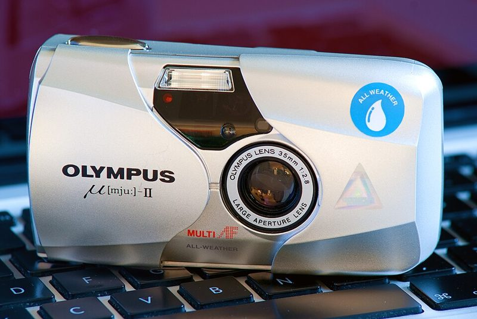
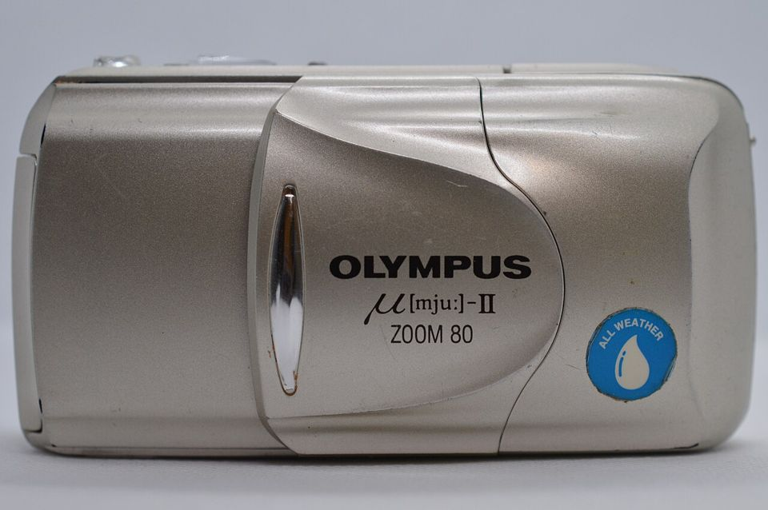

36 EXP. / 카메라 / 자동 똑딱이 / Olympus μ[mju:]-II
Olympus μ[mju:]-II 올림푸스 뮤2
주머니에 들어가는 145g 똑딱이에 밝은 35mm f/2.8 단렌즈. 미국 이름은 Stylus Epic입니다.


주요 사양
- 출시
- 1997년
- 렌즈
- 35mm f/2.8 고정(조리개 f/2.8~f/11)
- 초점
- 액티브 자동 초점, 최단 35cm
- 셔터
- 4초~1/1000초
- 방적
- 생활 방수(비 정도)
- 배터리
- CR123A 3V
- 크기·무게
- 108×59×35mm, 145g
좋은 점
- 단렌즈라 같은 시대 줌 똑딱이보다 화질이 좋음
- 작고 가벼워 늘 들고 다니기 좋음
- 비 오는 날에도 쓸 수 있는 생활 방수
아쉬운 점
- 전원을 켤 때마다 플래시가 자동 모드로 돌아감 — 끄려면 매번 설정
- 고장 나면 수리할 곳이 거의 없음
- Zoom 80 등 비슷한 이름의 줌 모델과 헷갈리기 쉬움
중고로 살 때 확인할 것
- 렌즈 덮개를 열면 렌즈가 나오고 전원이 들어오는지
- 뒷면 액정에 컷 수와 배터리 표시가 정상인지
- 렌즈 안 흐림과 액정 번짐
- 모델명이 "μ[mju:]-II"인지(줌 모델은 "Zoom" 표기)
자동 똑딱이 전반의 점검 방법과 결함 사진은 자동 똑딱이 가이드에 있습니다.
시세 참고 (해외 판매가, 2026년 10월 확인)
| 판매처 | 가격 | 비고 |
|---|---|---|
| The Pixel Connection (미국) 테스트 완료품 | $349 | |
| eBay 거래 완료 (2026년 6월) | $279.51 | 배송비 별도 |